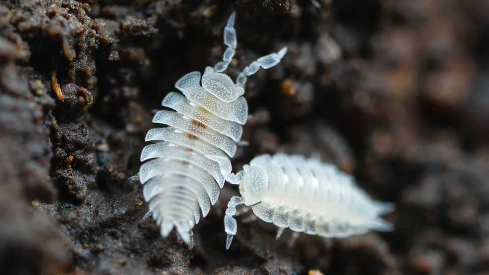

The world’s most essential habitat does not get its proper due
A new book, “The World Beneath Our Feet”, digs into the significance of soil

Sep 17th 2026
Just as there are charismatic species, there are charismatic habitats. Indeed, the two often overlap. Rainforests have beautiful birds and butterflies. African savannahs are filled with elephants and lions.
Then there are the uncharismatic habitats with uncharismatic species. Mites, centipedes and millipedes, anyone? Slime moulds and woodlice? And nematodes, nematodes, nematodes. These unloved critters, along with countless earthworms, are denizens of what is probably the least charismatic habitat of all: soil.
And yet the soil and its inhabitants are the most important ecosystems of the lot, argues Frank Ashwood, an ecologist. Without them, rainforests and savannahs would not exist—for these more telegenic biomes are, quite literally, rooted in the soil. So is agriculture, which has fed humanity since Homo sapiens worked out how to farm.
If you want biodiversity, soil provides it. According to Dr Ashwood, a teaspoon of healthy topsoil can hold up to 6bn micro-organisms; a square metre of temperate woodland or grassland soil contains some 300 earthworms, 50,000 springtails, 100,000 mites and 5m nematodes. Moreover, for those who fret about global warming, soil is a great way to keep carbon out of the atmosphere. The carbon stored in a hectare of boreal-forest soil, for example, weighs more than a jumbo jet.
Ignore the soil, then, at your peril. Partly, ignorance is a result of soil being, quite literally, dirt. Handle it, and it gets everywhere. Get it in a cut, and you may be advised to seek a tetanus shot and antibiotics. But there is also the matter of visibility. Air and water are transparent. Soil is not. The creatures that live in it may lead lives as exciting as those of forest-dwellers, but they are hidden from human sight.
Dig them up, though, and the result is awesome. A species of mites, for example, has evolved to make antifreeze proteins so they can live in the soils of sub-Antarctic islands. Pseudoscorpions have learned to hitch-hike to new homes by grasping onto flying insects such as beetles. Slime moulds form feeding networks so efficient that planners can use them to model public-transport networks. Woodlice include a species which couples up (in a way almost unheard-of in invertebrates), so that one partner can defend the burrow containing their young while the other forages. And nematodes, reckoned to make up 80% of individual living animals, have been brought back to life by scientists from ancient samples of frozen Siberian tundra.
Human beings, in Dr Ashwood’s telling, are not good soil mates. Modern machine-based farming not only leads to soil erosion; it also damages what soil remains by compacting together the particles, thus preventing creatures from traversing them. The result is a huge loss of species diversity.
In some parts of the world, though, there is a backlash. “No-till” and regenerative agriculture aim both to conserve existing soil biodiversity and increase it. Done well, this approach can be more profitable than conventional modern methods.
If Sir David Attenborough is looking for a swansong, then, he could do worse than release his camera crews on the world’s soils. The travel budget would probably be as high as that demanded by a more conventional wildlife documentary, for Dr Ashwood draws his examples from Africa, the Amazon, Australia, New Zealand, Ukraine and even the highlands of Scotland, as well as North America and his native England. Not so much “Life on Earth”, then, as “Life in Earth”. ■